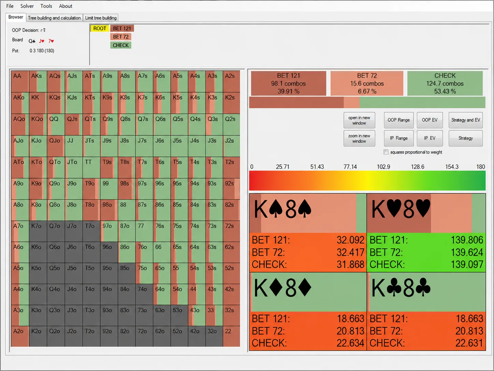
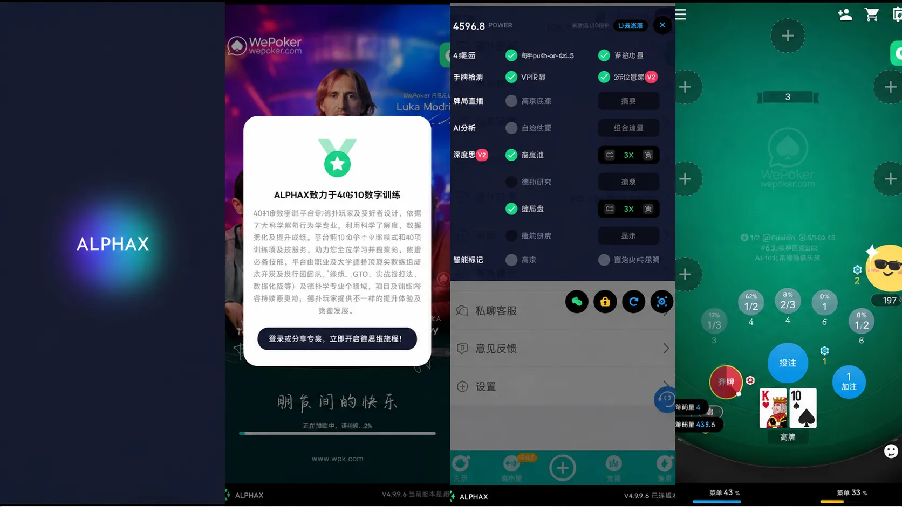
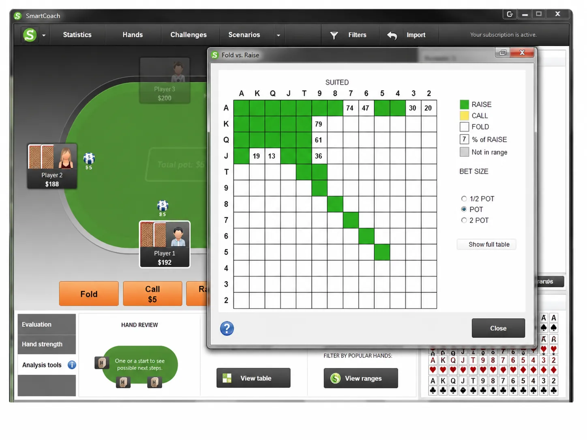
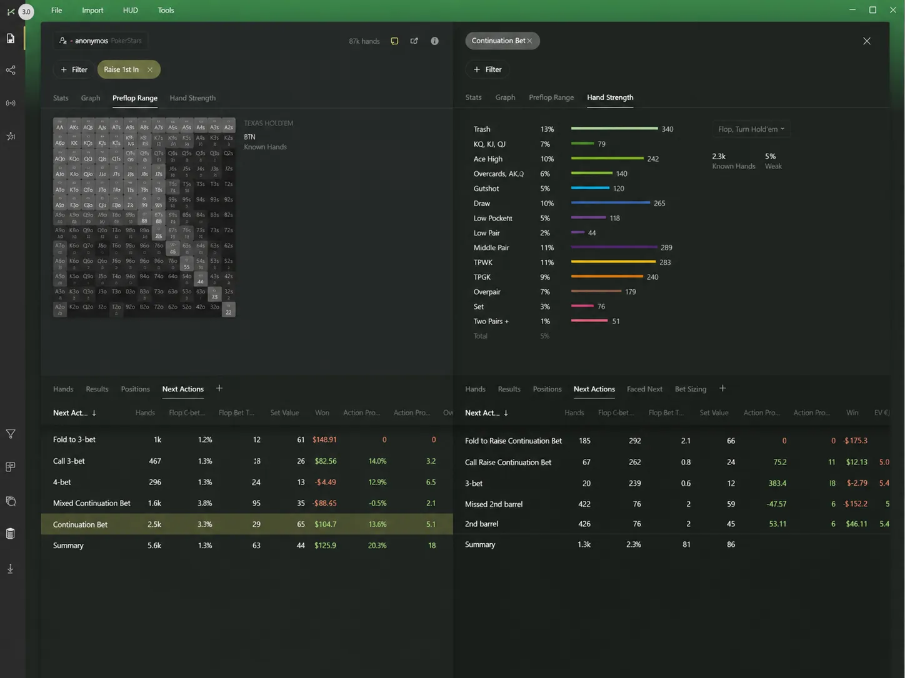

一、实战模拟类：低成本试错神器
1. GTO+ (付费/专业向)

- 简介：高级GTO计算软件，适合进阶玩家和职业牌手，能模拟各种场景的最优策略。
- 亮点：解算GTO策略的神器，职业牌手训练标配。
- “第一次看到自己的决策偏离GTO 40%时，血压直接飙升”
2. PioSolver (职业级GTO训练神器)

- 简介：职业牌手公认最强的GTO策略求解软件，支持深度翻前翻后模拟。
- 亮点：可构建超复杂决策树，支持多街bet尺寸、不同对手类型，并用EV差异热力图直观显示策略漏洞。
- “打开它的第一天，我发现自己过去三年打的德州都是玄学...”
二、AI训练类：拥有属于你的德扑私教
1. ALPHAX (付费/免费试用)

- 简介：全球首款多人实时GTO解算AI，基于Pluribus大模型开发。
- 亮点：线上训练AI助手，实时输出EV值、牌力评估、对手漏洞分析，兼容各大主流平台实战应用。
- “开着AlphaX打训练赛，就像考试带了计算器还提前看了答案”
2. PokerSnowie (付费)

- 简介：AI驱动的德州扑克训练软件，模拟真实对局并提供实时反馈，帮助修正错误决策。
- 亮点：AI实时纠正你的决策错误，适合纠正直觉流玩家的漏洞。
- “被AI骂了3个月后，我终于明白为什么河牌不该bluff...”
三、数据分析类：把玄学变成科学
1. Hand2Note (付费/免费试用)

- 简介：实时HUD（平视显示）数据分析工具，帮助你在对局中洞悉对手弱点。
- 亮点：实时统计对手数据，如加注率、跟注率等，并自动标记过度诈唬、跟注站等对手漏洞。
- “它让我发现俱乐部总赢分的老王，翻前加注率居然高达38%！”
2. PokerTracker 4 (经典款)
- 简介：老牌扑克数据分析软件，适用于长期复盘和策略优化。
- 亮点：百万手牌数据库，深度分析个人数据。和Hand2Note二选一就行，新手建议后者。
- “把每一次感觉，都变成可以复盘的数据”